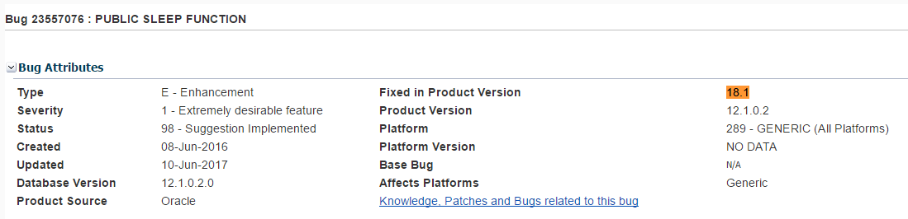

This was first published on https://www.dbi-services.com/blog/new-release-model-for-jul17-ru-and-rur/ (2017-05-30)
Republishing here for new followers. The content is related to the versions available at the publication date.
.
When reading about new version numbering in SQL Developer, I took the risk to change the title and guess the future version number for Oracle Database: Oracle 17.3 for the July (Q3) of 2017. Of course, this is just a guess.
Confirming the previous guess, we start to see some bugs planned to be fixed in version 18.1 which is probably the January 2018 Release Update. 
Oracle Database software comes in versions: 10g in 2004, 11g in 2007, 12c in 2013
In between, there are releases: 10gR2 in 2005, 11gR2 in 2009, 12cR2 in 2017
In between, there are Patch Sets: the latest 11gR2 is 11.2.0.4 (2 years after 11.2.0.3) and 12cR1 is 12.1.0.2 (one year after 12.1.0.1)
Those are full install: full Oracle Home. It can be in-place or into a new Oracle Home but it is a full install. There are a lot of changes in the system dictionary and you run catupgrd.sql to update it. It takes from 30 minutes to 1 hour on average depending on the components and the system.
Their primary goal is to release features. You should test them carefully. For example, the In-Memory option came in the first Patch Set of 12cR1
This will change in 2017 with annual feature releases. Well, this looks like a rename of Patch Set.
All releases are supported several years, with fixes (patches) provided for encountered issues: security, wrong result, hanging, crash, etc. Rather than installing one-off patches, and requesting merges for them, Oracle supplies some bundle patches: merged together, tested as a whole, cumulative, with a quarterly release frequency. Depending on the content and the platform, they are called Bundle Patches (in Windows), CPU (only security fixes), SPU (same as CPU but renamed to SPU), PSU (Patch Set Update), Proactive Bundle Patch (a bit more than in the PSU)…
The names have changed, the versioning number as well as they now include the date of release.
You apply patches into the Oracle Home with OPatch utility and into the database dictionary with the new datapatch utility.
Their primary goal is to get stability: fix issues with a low risk of regression. The minimum recommended is in the PSU, more fixes are in the ProactiveBP for known bugs.
This will change in 2017 with quarterly Release Updates. Well, this looks like a rename of PSU to RUR (Release Update Revision) and a rename of ProactiveBP as RU (Release Update).
The goal is to reduce the need to apply one-off patches on top of PSUs.
Here is all what I know about it, as presented by Andy Mendelsohn at DOAG Datenbank 2017 keynote:
It is not common to have new announcements in the last fiscal year quarter. Thanks DOAG for this keynote.
{kind=link}
{kind=link}